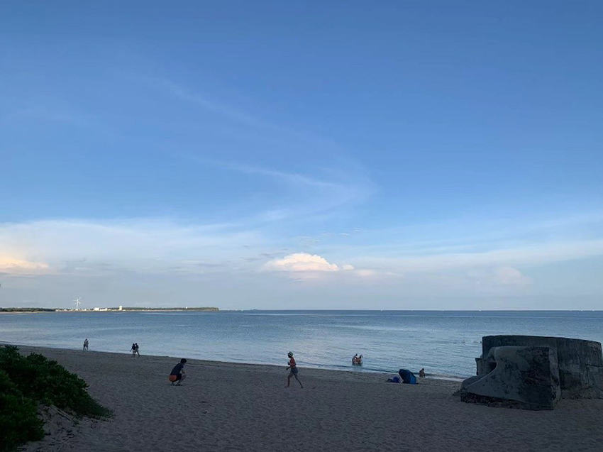

在去年暑假，我與朋友一起到澎湖小旅行，當天天氣非常好，尤其當飛機在台灣海峽上空時，水藍色的天空與水藍色的海面連在一起，海面上映著飛機的倒影，為這個旅程開啟美好的序幕。
到飯店check-in後，騎上租來的機車，緊接著就到了我們的第一站‑海上皇宮吃烤鮮蚵，是一間在海上的餐廳，會有接駁的渡輪帶我們到餐廳上，在渡輪上可以看到海是藍綠色的，很清澈，雖然很炎熱心情卻很愉悅。澎湖鮮蚵真的很鮮甜肥美，服務人員也非常熱情，遇到不太會烤蚵的客人也會主動桌邊教學，我的烤蚵技術就是在這學的，現在已經是個烤蚵達人！回到碼頭後，考量到愛吃甜點朋友的第二個胃，於是打開他的口袋名單，前往宮廷風的咖啡甜點店，拍了許多好看的甜點照，就這樣過了個下午。回飯店的路上順便買了許多澎湖人氣美食當晚餐，結束美好的一天。
隔日，因為天氣實在太熱了，我們找到澎湖水族館，一邊吹冷氣、一邊走著海底隧道，近距離看魟魚、鯊魚等，各式各樣的海洋生物，忍不住在裡面待了好幾個小時，外面還有號稱天堂路的海景，一條道路直接通到海中央，炎熱的天氣還是很多人前往拍照。沒幾個小時，貪吃的朋友又上線了，通樑古榕與跨海大橋似乎不遠，周邊也有非常多美食在他的口袋名單中，於是我們吃了有名的仙人掌冰、海菜煎餅、河豚皮、海膽炒飯、外垵刈包等，我心中的第一名是海菜煎餅，真的非常好吃！
傍晚去看摩西分海，海上的夕陽真的非常漂亮！附近還有咖啡店，咖啡店外放養了許多橘貓，很多小孩在與貓玩耍，此時，眼尖的朋友發現草叢內居然有兩條蛇，似乎在打架或是嬉鬧，因為蛇的體型偏大，即使在稍遠的距離的觀察，仍讓我內心很震撼！晚餐我們去了朋友推薦的一間Pizza店，叫做瑪咖朵披薩，這間pizza店據說每次都排很多人，建議要來之前一定要先預約唷！店員推薦的海鮮pizza很令人驚艷！pizza上的海鮮是可以品嘗出來的新鮮口感，配的炸物蝦子非常大隻，是下次來澎湖玩會想再回訪的店。
最後一天走一個隨性路線、沒有規劃的，剛好路過一家叫「原味漁村小吃」的餐廳，外面大排長龍，於是我們也加入排隊的隊伍，直到第一道餐點上桌、吃了第一口，我們終於明白為什麼這間小餐廳客人絡繹不絕了，非常好吃的蚵仔滷肉飯，是在台灣本島吃不到的味道，大顆的烤鮮蚵、蚵仔手卷光看就讓人垂涎三尺，我們真的非常幸運！後來遇到萬安演習，躲進一間咖啡店，裝潢是叫日式復古的風格，蛋糕也沒有很華麗的裝飾，店內卻很舒適，我想應該是老闆很親切吧！
歡樂時光特快，三天旅程就這麼過去了，澎湖的海真的太美、太多好吃的美食，讓我們至今懷念起海菜煎餅，似乎還記得它的口感和味道，寫起這篇遊記的同時，又開始規劃起下次澎湖旅遊行程了。
|  |